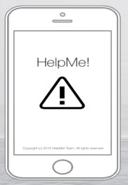

Projects
Entrepreneur Project 2015 : May 18, 2015 - June 4, 2015

Course: Principles of Engineering 2014-2015
Partners: David Gilman, Shiroman Singh, Vishnu Chadalavada
The Entrepreneur Project is a project designed for students in Principles of Engineering, Introduction to Engineering Design, and Computer Integrated Manufacturing. This project was assigned to us get a sense of how to sell a useful product to companies and other venture capitalists. Our task was to think of a problem that exists in the world and design a solution that addresses it. Because my group's goal was to place in the showcase, we researched and researched and came up with a good solution. We wanted to do something that limits the amount of bullying that goes on in schools. We created the application, HelpMe!. HelpMe! is a application for iOS devices using the Swift language and Parse and Social Frameworks that sends a notification to a designated person when someone is currently being bullied. How this works is that as soon as a victim of bullying opens up the application, there are six buttonspresent on the interface. Each button is a common location to our school (example: Library, Cafeteria, Track, etc.) locating where the victim of bullying is. As soon as the victim presses where he is, it will send a text message to a designated person explaining that they are in trouble. In this project, I was the one who came up with the idea for this and I also did half of the programming and most of the presentation which we presented to everyone. From this project, I learned how to program in the Swift language and also to control a team. Naturally, throughout this project, we had conflicts because everyone's view of the application was different. I was the person who controlled my team and made a final decision. Our team did not have a legitimate project manager because all of us were working as hard equally. Through this project, some leadership qualities demonstrated were resolving problems, teamwork, and problem-solving techniques. Overall, I feel like we undertook this project well. We received third place in the showcase and received many compliments from everyone.